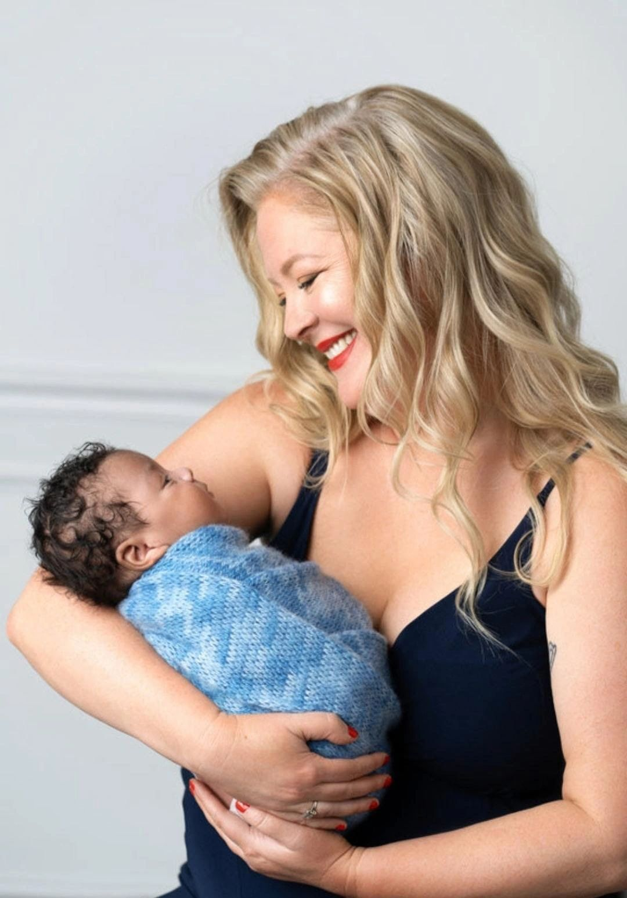

For expectant mothers
Facing an unplanned pregnancy? You deserve support, and you stay in control of every choice.
- Help with rent, utilities, phone and food
- Rides to doctor visits, the hospital and our office
- Prenatal care, hospital and delivery costs covered
- You choose the family and the level of contact
- Confidential, with legal paperwork handled for you
- Counseling and support 24/7, before and after placement